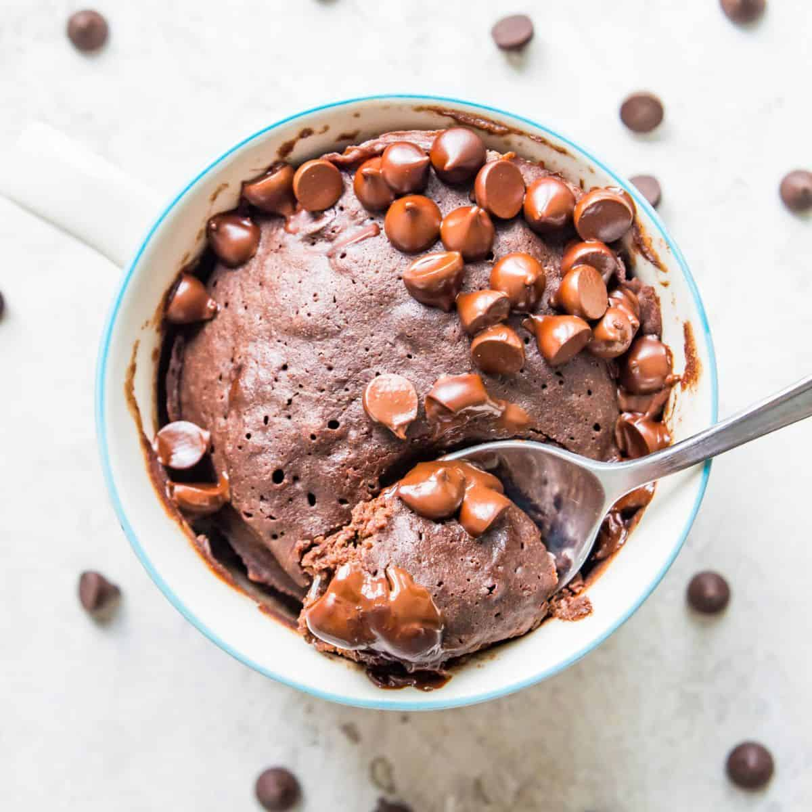

Homemade Chocolate Cake in a Mug
Looking for a delicious late-night snack but have no clue what you want?
How about you try to make your own cake in a mug?
You heard that right a cake IN A MUG!
You do not have to worry about waiting too long for your cake to bake.
Or not having enough ingredients for this recipe.
All it takes is a few simple ingredients, a mug, and a microwave!
Ingredients:
- ¼ cup all-purpose flour
- ¼ cup white sugar
- 2 tablespoons unsweetened cocoa powder
- ⅛ teaspoon baking soda
- ⅛ teaspoon salt
- 3 tablespoons milk
- 2 tablespoons canola oil
- 1 tablespoon water
- ¼ teaspoon vanilla extract
Instructions:
- Mix dry ingredients: flour, sugar, cocoa powder, baking soda, and salt together in a large microwave-safe mug.
- Stir in wet ingredients: milk, canola oil, water, and vanilla extract.
- Cook in the microwave until cake is done in the middle, about 1 minute 45 seconds.
- Allow cake to cool off for about 20 seconds.
- Sit back, Relax, and Enjoy!